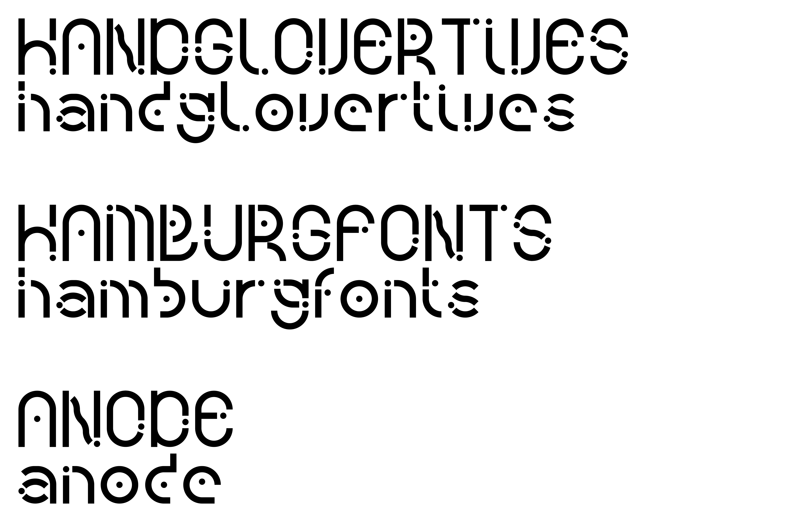
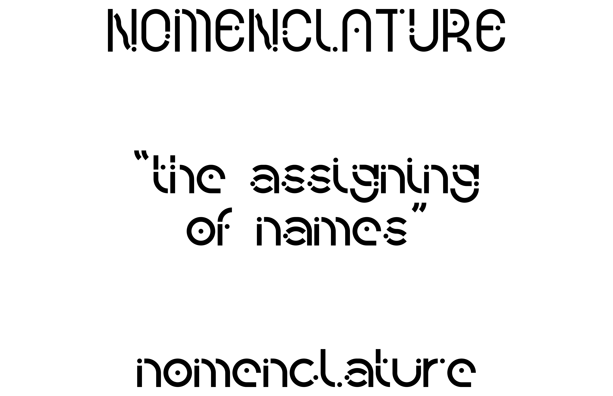
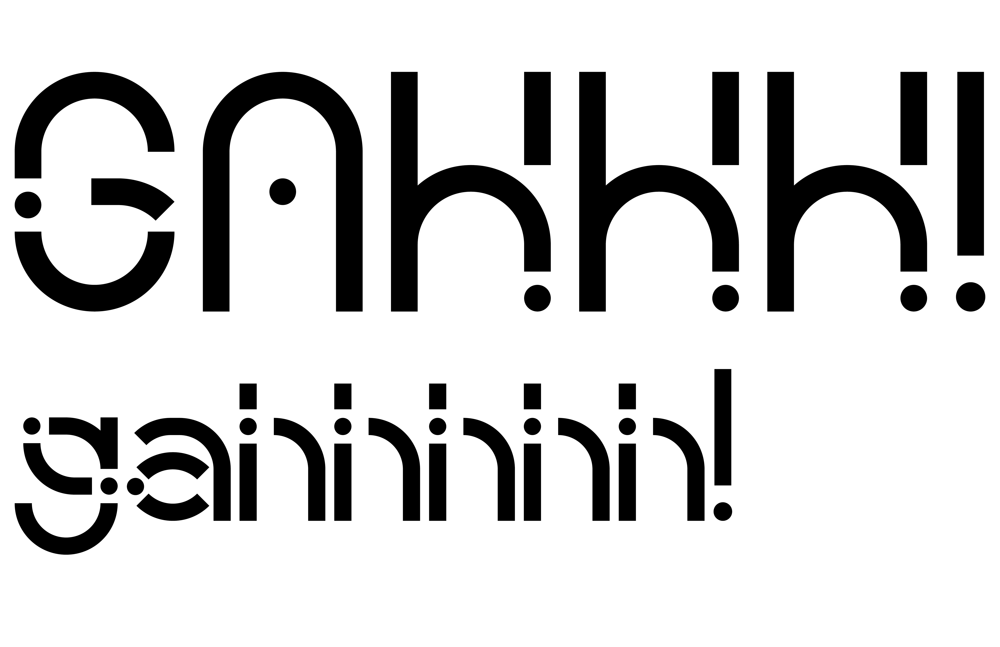
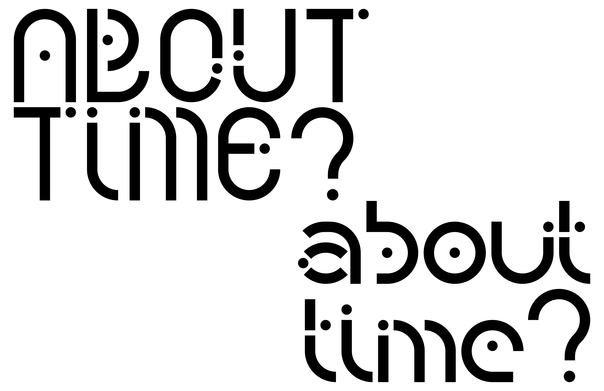
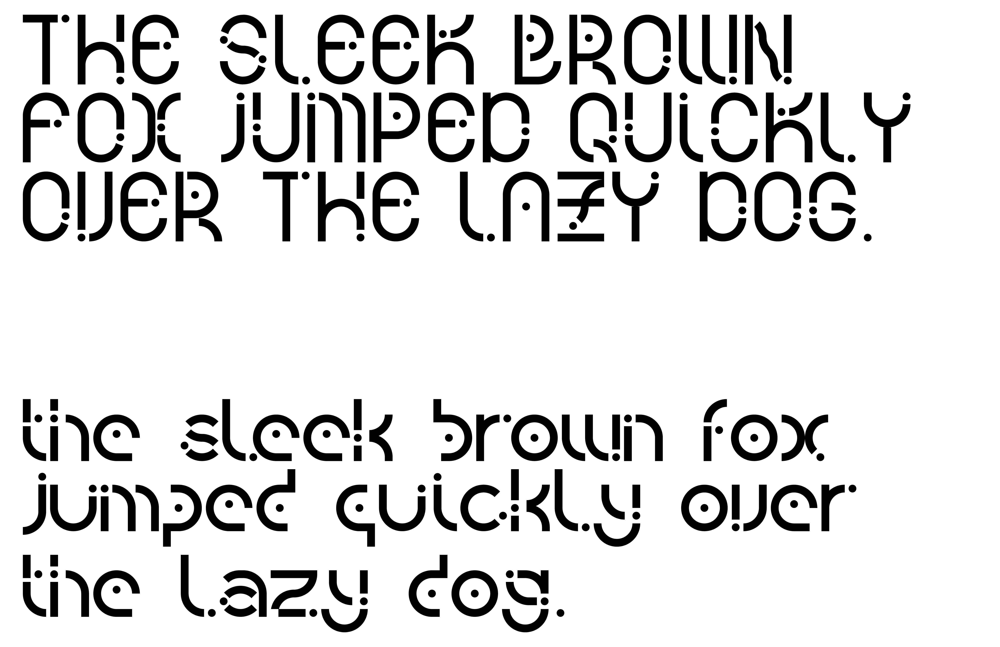

MODULAR TYPEFACE
for CORE 1: TYPOGRAPHY (FALL 2022): PROJECT #2

Brief:
Create a unique typeface by combining modular components based on fixed units and an underlying grid or other system.
Purpose:
* To discover what defines each letter of the alphabet and what makes it discernible from other letters. (For example, what makes an “a” an “a” or “n” an “n”; what identifies a letter as uppercase or lowercase, etc.?)
* To explore how the visual treatment of repeating elements connect the letterforms to define the unique personality of the overall typeface.




